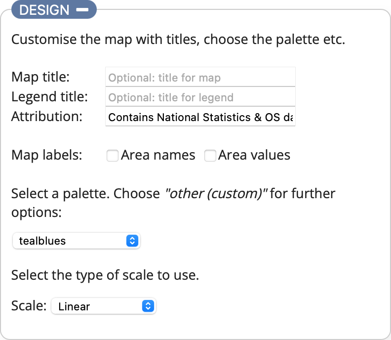
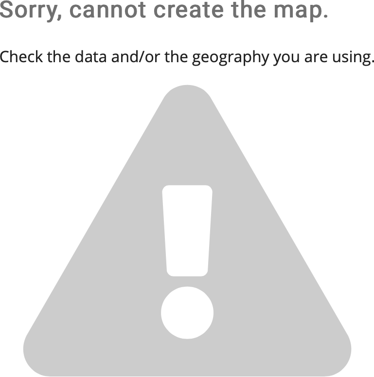

Choroplether documentation
Introduction
Choroplether is a web application allowing the quick creation of choropleth map visualisations based on Vega-Lite, without having to create all the code yourself. The resulting output can be saved as an SVG or PNG image or opened within the Vega Editor for further customisation. You can also embed it in a webpage if you require an interactive visualisation.
You supply some suitably formatted data, select or provide a spatial geography that matches the data and then customise the appearance. The interface is split into 3 sections: Data, Geography and Design, each can be collapsed and expanded as required by selecting the relevant orange losenge. The app automatically attempts to update the visualisation as you make changes in any of the sections, or when you select the UPDATE button.
Demonstration
 The app loads with a demonstration example already visualised; the 2017 mid-year population estimates from the Office of National Statistics for the electoral wards in Trafford. Expand the Design section as shown in the image and add a title by entering some text in the Chart title: box. Now select UPDATE to see the title added to the visualisation. Next try changing the palette from oranges to teals. Finally select each of the different scale options and see how the visualisation and legend changes (you can find out what each scale option does in the Design section). This should give you an idea of how to customise the output. Read on to learn how to create a visualisation based on your own data.
Data
This is where you specify the dataset that will be visualised, either by choosing a local file from your device, providing the URL of an externally hosted file or pasting the data directly into the box. The data can be in either CSV or JSON format and the links provide you with example files for both to help ensure you get your data prepared correctly. Once you have entered some data the app will attempt to visualise it. If your data relates to the geography currently selected in the Geography section it should produce a visualisation straightaway, otherwise the following notification will be displayed.

This means either that the data you have provided doesn't match the currently selected geography (see next section for more on this) or there is an error in your data. The most important aspects are:
1. The data must contain the field value which contains the values to be visualised
2. Both the data and the geography must contain the field area_code as this is the joining variable used to match the data to the spatial geography
Geography
 The geography is a spatial data file which describes the shapes associated with the data (e.g. the Electoral Wards within a Local Authority) as polygons using latitude and longitude coordinates. The list is pre-populated with different geographic boundaries within Trafford and Greater Manchester. If your data is related to a different geographic location or type of geography select the Other (custom)... option.
The geography is a spatial data file which describes the shapes associated with the data (e.g. the Electoral Wards within a Local Authority) as polygons using latitude and longitude coordinates. The list is pre-populated with different geographic boundaries within Trafford and Greater Manchester. If your data is related to a different geographic location or type of geography select the Other (custom)... option.
You can now provide your geography in a similar way to the data, e.g. by choosing a local file from your device, providing the URL of an externally hosted file or pasting the data directly into the box.
The geography must be valid GeoJSON, an open-source spatial format, and each Feature must contain the key area_code to identify it. This key is used to match the features in the spatial geography to the data. The following example from a spatial file describing Trafford's Electoral Wards should hopefully demonstrate this:
{
"type": "FeatureCollection",
"crs": { "type": "name", "properties": { "name": "urn:ogc:def:crs:OGC:1.3:CRS84" } },
"features": [
{
"type": "Feature",
"properties": {
"area_code": "E05000819",
"area_name": "Altrincham"
},
"geometry": {
"type": "MultiPolygon",
"coordinates": [...
The ward of Altrincham has an area_code of E05000819. In the example data files this area_code has the value 12803. This value is assigned to a colour based on the range of values within the dataset and the type of scale you want to use (see the Design section). The result is the shape of Altrincham ward will be displayed, filled with the assigned colour.
Design
The final section is where you specify how your finished visualisation will look, allowing you to add titles, attribution, select the palette and also choose the scale used to assign the palette to the data. The palette options provided in the select list are a subset of the Vega sequential scheme names. You can use any palette listed via the link within Vega-Lite, but Choroplether will only allow sequential palettes (single-hue and multi-hue) to be used. This is because sequential palettes are the most appropriate types to use for a choropleth map displaying the difference in a singular observation (e.g. population) rather than categoric data. If the palette you want is not listed, you can choose Other (custom)... and type in the scheme name into the box provided. If you require a non-sequential palette you can edit the visualisation within the Vega Editor (see the Exporting and further editing section for more information).
The scale determines how the colours are assigned to the map based on the data being displayed. There are 3 options: Linear, Quantile and Equal intervals. An additional Intervals selection appears except when the Linear option is chosen.
- Linear: Assigns a unique colour from the palette to each unique value in the dataset range
- Quantile: Splits the dataset range into the number of intervals specified in the intervals select list, assigning an equal number of observations to each interval. The range of values within each interval can be different.
- Equal intervals: Splits the dataset range into the number of intervals specified in the intervals select list, assigning an equal range of values within each interval. The number of observations within each interval can be different.
The choice of scale depends on your data and what you are trying to show with the visualisation. The number of intervals available are between 4 and 7 inclusive. If you require a different number you will need to use the Vega Editor.
Exporting and further editing
Hovering over your visualisation will highlight a circle icon containing 3 dots in the top-right corner. Selecting this icon provides the export options available to you.
If you are happy with your visualisation and simply need a static graphic to include in a report or presentation you can choose either the Save as SVG or Save as PNG options to create an image file in the relevant format.
To embed the interactive visualisation within a webpage you will need to choose View Source which provides the Vega-Lite specification (code) of your visualisation. You will then need to use the Vega-Embed tool (as Choroplether does) along with your specification. (The View Compiled Vega option is only relevant if you need to use features from the full Vega specification as opposed to Vega-Lite.)
Finally, Open in Vega Editor allows you to tweak and customise your visualisation further by editing the code in the online editor. To use this effectively you will need to read the Vega-Lite documentation and understand the Vega-Lite specification.
Credits
Choroplether was created using the following:
- Vega-Lite - (C) University of Washington Interactive Data Lab (LICENCE)
- Vega-Embed - (C) University of Washington Interactive Data Lab (LICENCE)
- Alertify.js - (C) Mohammad Younes (LICENCE)
- Fontawesome - (C) Fonticons, Inc. All rights reserved (LICENCE)
- All other code by Trafford Data Lab (LICENCE)